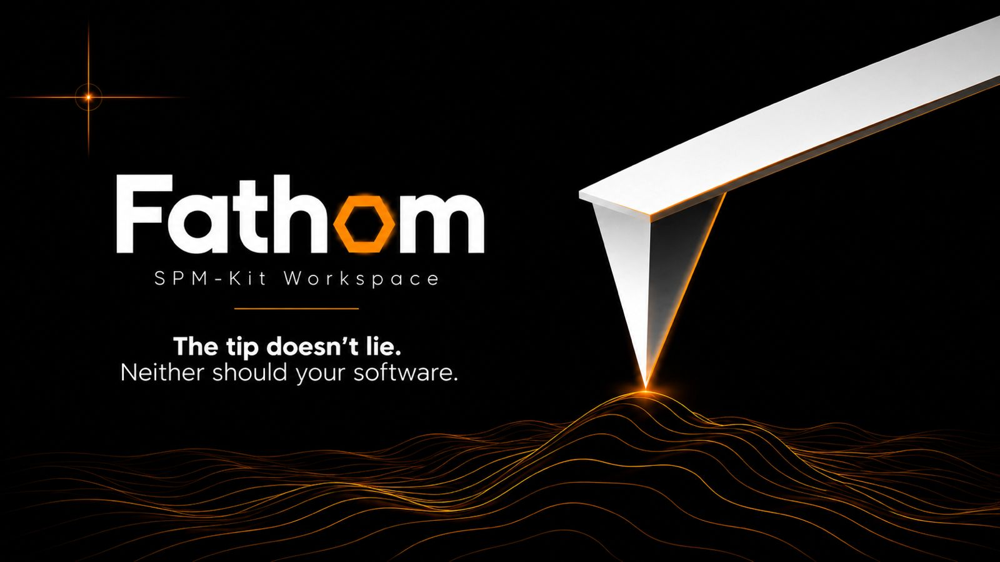
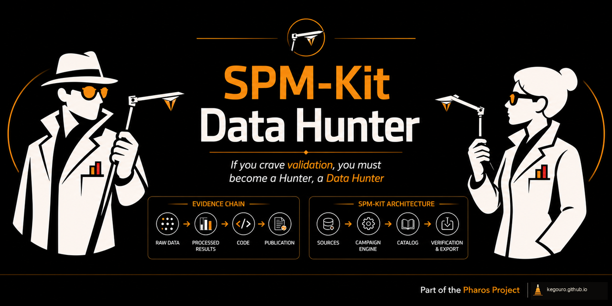
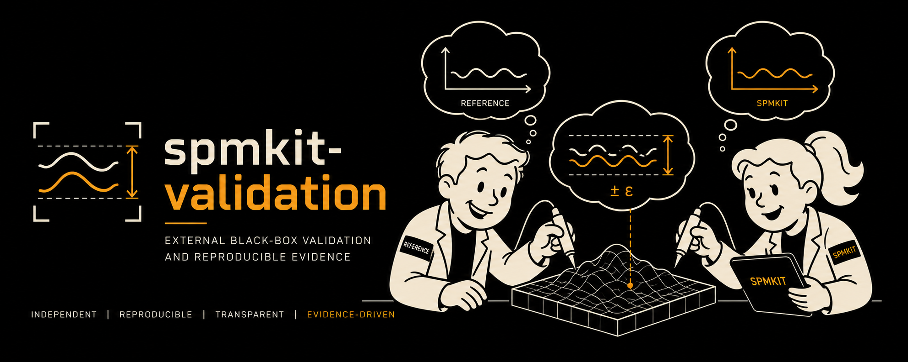

One ecosystem · Five scientific responsibilities
An open AFM/SPM analysis ecosystem built around evidence.
SPM-Kit combines a numerical engine, an interactive workspace, synthetic ground truth, external validation and public-data discovery so that scientific results can be inspected from raw evidence to final output.
The 60-second model¶
Find the evidence → define the truth → test the system externally → preserve the result. Five identities divide that work without pretending the boundaries are automatic:
Data Hunter
Finds candidate datasets, fixtures and references. Human review decides whether a candidate advances.
Phantoms
Creates deterministic numerical surfaces and declared corruptions independently from the analyzer.
Validation
Freezes contracts and invokes an installed SPM-Kit package through public interfaces.
SPM-Kit Core
Reads calibrated data and performs the numerical analysis being evaluated.
Fathom
Lets a researcher inspect, configure and operate the same Core interactively.
The line above is explanatory. The real architecture is a network.
The technically accurate network¶
Components¶

SPM-Kit Core · Numerical engine
The computational source of truth
Readers, calibrated domain models, image metrology, force spectroscopy, KPFM, resonance, export, provenance and plugins through Python and the `spmkit` CLI.
For: scientists writing scripts, notebook users, HPC/batch operators, integrators and reader/plugin developers.
Install: `spmkit` package. PyPI lags the current GitHub source; see the installation matrix.

Fathom · Interactive workspace
Operate the Core without hiding it
Perspective-based exploration, parameter editing, curve fitting, maps, linked panels, figures, projects and reports over the same numerical implementation.
For: researchers who need visual inspection, interactive fitting and publication-oriented output.
Install: `spmkit[gui]`; launch with `spmkit gui`.

SPM-Kit Data Hunter · Evidence discovery
Find leads, then review them
Queries supported public repositories, normalizes metadata, deduplicates records, inventories files and classifies possible scientific utility.
For: dataset scouts, reader-fixture curators and validation designers.
Install: separate Git repository; not on PyPI.

SPM-Kit Phantoms · Synthetic truth
Define truth before analysis
Creates analytical surfaces with known parameters, deterministic random cases, declared corruption sequences, clean/observed separation and export manifests.
For: algorithm developers, reviewers and campaign authors who need a known numerical answer.
Install: separate Git repository; not on PyPI.

SPM-Kit Validation · External evidence
Test what the package actually does
Freezes campaigns, invokes public executables in a separate process, captures outputs, compares references and preserves passes, failures, blockers and limitations.
For: reviewers, release maintainers and researchers reproducing a narrow scientific claim.
Install: separate Git repository; not on PyPI.
Why multiple repositories?¶
The separation protects scientific responsibilities:
| Boundary | What separation protects |
|---|---|
| Core vs Fathom | one numerical implementation across headless and interactive use |
| Core vs Phantoms | the expected synthetic answer is not produced by the analyzer under test |
| Core vs Validation | campaigns exercise installed public behavior instead of importing internals |
| Data Hunter vs Validation | search scores and metadata do not silently become scientific truth |
| Companion repositories | narrower dependencies, independent release histories and auditable evidence changes |
This is deliberate architecture, not accidental fragmentation. An external validation repository can pin an older SPM-Kit, preserve a failed campaign and remain inspectable even while Core continues to evolve.
End-to-end workflow¶
| Stage | Component | Action | Example interface | Artifact | Claim enabled | Limitation |
|---|---|---|---|---|---|---|
| Discover | Data Hunter | Query public APIs and classify records | spmkit-data-hunter --source zenodo --preset topography --limit 20 --output hunt |
JSON/CSV candidate catalog, checkpoints, provenance | A record may be useful for a declared role | No truth, redistribution right or suitability is established |
| Define | Phantoms | Generate a known surface and optional corruption | spmkit-phantoms --outdir cases |
clean.npz, optional observed/masks, manifest, hashes |
The numerical input and expected property are known | It is not a physical microscope |
| Freeze | Validation | Declare SUT, command, inputs, reference and tolerance | spmkit-validation campaign campaigns/smoke_v0.1.yaml --output run |
frozen cases, captured streams, cases.csv |
The external test contract is inspectable | Process isolation alone does not prove reference independence |
| Compute | SPM-Kit Core | Run the installed public command | spmkit analyze scan.nid --output results |
typed results, CSV/JSON and logs | The package performed the named calculation | The result inherits calibration and preprocessing limits |
| Inspect | Fathom | Review parameters, fit quality, maps and output | spmkit gui scan.nid |
project, figure, report or export | A human can audit the same Core result interactively | Visual plausibility is not validation |
| Preserve | All | Retain versions, hashes, parameters, results and limits | campaign/report-specific | reproducible evidence record | A narrow claim can be re-examined | Preservation does not upgrade the evidence level |
Choose your entry point¶
| I need to… | Start with | Why |
|---|---|---|
| Analyze an AFM image interactively | Fathom | Visual scientific workspace |
| Analyze files in Python or on a cluster | SPM-Kit Core | Headless API and CLI |
| Test an algorithm against known surfaces | Phantoms | Known synthetic truth |
| Reproduce a frozen comparison campaign | Validation | External contracts and evidence |
| Find public AFM/SPM files | Data Hunter | Discovery and evidence triage |
| Add a new reader | SPM-Kit Core plugin system | Public reader contract |
| Contribute a validation dataset | Data Hunter + Validation | Human classification before campaign design |
| Inspect evidence behind a claim | Validation | Manifests, logs, reports and limitations |
Open the full accessible decision guide
Evidence ladder¶
| Level | Meaning | Ecosystem contribution | Not automatic |
|---|---|---|---|
LEVEL 0 — CLAIMED |
behavior is described | all components document intent | a README statement is not a test |
LEVEL 1 — SOFTWARE_VERIFIED |
automated software behavior is checked | Core, Fathom and companions test contracts | passing tests do not prove the physical model |
LEVEL 2 — NUMERICALLY_VERIFIED |
a known numerical case is recovered | Phantoms supplies truth; Core/Validation execute recovery | a synthetic surface is not a calibrated specimen |
LEVEL 3 — CROSS_VALIDATED |
a declared external reference agrees within frozen tolerance | Validation records reference, independence and comparison | external software is not necessarily independent truth |
LEVEL 4 — PHYSICALLY_VALIDATED |
calibrated physical reference supports the claim | future campaign proposals may use reviewed datasets | no current general claim exists |
LEVEL 5 — REPRODUCIBILITY_VALIDATED |
independent laboratories reproduce the result | future interlaboratory protocol | no current claim exists |
Using a component never grants a level by itself. The retained evidence record, scope and limitations determine the level.
Integration patterns¶
- Phantoms → Validation → SPM-Kit: export a declared synthetic case, freeze expected metrics and tolerance, then invoke the installed SPM-Kit CLI.
- Data Hunter → human review → Validation: inspect license, rawness, calibration and scientific role before a selected record enters campaign design.
- SPM-Kit Core → Fathom: Fathom calls the same public numerical packages and displays their typed results; it does not reimplement equations.
- External reference → Validation → evidence report: a campaign pins the reference version and method, records its independence class and preserves both differences and agreements.
The exact status of each artifact handoff is recorded in the artifact and data contracts.
Limitations¶
Read before treating the ecosystem as evidence
- The components are alpha-stage where their package metadata says so.
- Synthetic evidence is not physical evidence.
- Public datasets are not automatically references or redistributable fixtures.
- Black-box execution does not guarantee that a reference is scientifically independent.
- Not every SPM-Kit feature or parser has the same maturity.
- Physical and interlaboratory validation remain incomplete.
- Manual handoffs exist between repositories; the portal labels them rather than inventing automation.
Next¶
Choose a component · Install the ecosystem · Run an end-to-end workflow · Review brand governance